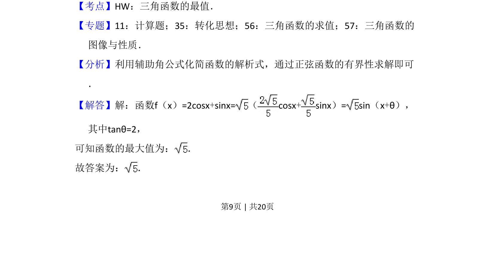
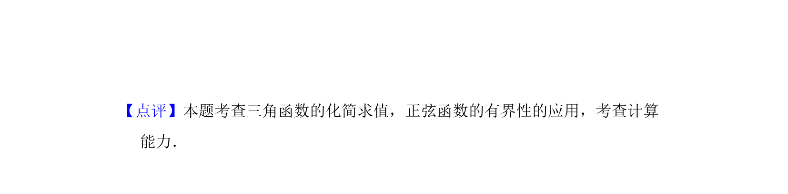

考点：辅助角公式 正弦函数有界性 三角函数最值
利用辅助角公式将函数化为正弦型函数，进而求其最大值。


📄 原 PDF 第 9 页：
素材/真题/吉林/2008-2024·（吉林）数学高考真题/2017年高考数学试卷（文）（新课标Ⅱ）（解析卷）.pdf
13．（5分）函数f（x）=2cosx+sinx的最大值为 ．
【考点】HW：三角函数的最值．菁优网版权所有 【专题】11：计算题；35：转化思想；56：三角函数的求值；57：三角函数的 图像与性质． 【分析】利用辅助角公式化简函数的解析式，通过正弦函数的有界性求解即可 ． 【解答】解：函数f（x）=2cosx+sinx=（cosx+sinx）= sin（x+θ）， 其中tanθ=2， 可知函数的最大值为： ． 故答案为： ．